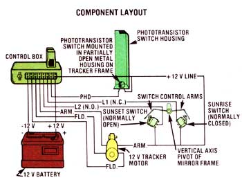

Mother's Solar Tracking System
Designing and making a sun tracking unit for solar equipment.
By the Mother Earth News editors
January/February 1979
A few issues ago-back in MOTHER NO. 52-we featured an ingenious low-cost solar furnace built by a fellow named Charles Curnutt out in Twenty-nine Palms, California. Not only was Mr. Curnutt's rig inexpensive (about $250) and (fairly) easy to build, but it offered just about unlimited possibilities. In fact, the furnace seemed capable of doing everything from heating water to powering a steam engine, and those applications didn't begin to tap its full potential!
But even better yet, Charles-the unselfish guy that he is-agreed to let MOTHER's research team use his design to build our own version of the solar tracking steam generator ... and to improve upon it if we could.
Well, folks, as many of you probably know, it's been a few months since that original article appeared in MOTHER ... but we've finally got our "interpretation" of Mr. Curnutt's design nearly completed (see MOTHER NO. 54). And-even though we still haven't found a steam engine that suits our needs exactly (this was one of the reasons for the delay in releasing our story)-we can say that the furnace itself is working quite well . .. well enough, in fact, to have powered a crude steam engine for an indefinite period of time.
FOLLOW THE SUN!
The secret, of course, to a really efficient solar collector is that it must track the sun ... that is, keep a dead aim right at ol' Sol as he moves across the sky. When this can be done, every bit of direct sunlight available is used to the fullest possible extent at any given time of day.
Basically, what MOTHER has done with Charlie's design is to mount 140 decorative wall mirrors onto a frame (with each 12- by 12-inch mirror attached to its own separate, adjustable-to-any-angle support), and then aim each of those mirrors at a roughly two-foot-square"steam generator" (boiler) ... which is housed in its own insulated box and mounted 10 feet above the frame on two sections of galvanized iron pipe. Not only does this pipe hold the "steam generator" system aloft, but it serves as a means for water to enter (and live steam to exit from) the boiler.
Additionally, the whole framework-which, remember, includes the mirrors and the "steam generator"-is free to move not only on a vertical axis (so it can "track" the sun on its journey across the sky), but also on a horizontal axis (so the "angle of attack" on the sun can be adjusted to compensate for changes of season). This horizontal adjustment is necessary, of course, because the winter sun is about 30' lower in the sky than the summer sun.
HOW IT WORKS
OK, so now you know what this solar tracking rig is supposed to do ... but exactly how does it do it? Well, to begin, the movement of the frame (which, by the way, is counterbalanced-below its pivot point-to offset the weight of the boiler out on the 10-foot pipes) on its vertical axis is accomplished by a length of nylon line fastened to each of the frame sides. And this rope, in turn, is threaded around a regular 6-inch V-pulley which is connected by chain drive to a readily available Chevrolet electric window motor.
When (every three minutes or so) the motor is temporarily activated by a phototransistor in the electronic tracking system, it rotates the V-pulley slightly ... which pulls in a bit of the rope and causes the frame to move a tad. Thus, in effect, the frame "tracks" the sun across the sky.
Of course, this movement could go on indefinitely ... if it weren't for two very important factors: [1] The same phototransistor that turns the motor on also turns it off almost immediately (by virtue of an ingenious housing that casts a shadow on the sensor when the mirror frame moves slightly), and [2] towards the end of the day, when the sun is too low in the sky to be effective, a small "arm" mounted at one pivot point of the tracking frame kicks a switch that reverses the motor and brings the entire frame and boiler assembly back to its original position, ready for the start of a new day. (When the frame returns to its starting point, another switch is triggered by a second "arm" to stop this reverse flow of current in the motor ... which effectively shuts the motor down and sets the system back to "normal" so that the sun's rays can repeat the cycle.)
SHOPPING FOR PARTS
To make your parts shopping as uncomplicated as possible, all the electronic components for this project have been taken right from Radio Shack's 1979 catalog. If you can't locate a Radio Shack retail store in your area (there are over 5700 stores and dealers nationwide). .
For the most part, all of the mechanical parts used in the tracking system are common items that you'd find in any shop, garage, or junk pile. Although we found that the Chevrolet (Delco) electric window motor used to drive the system is entirely compatible with the existing electronics, there's no reason why-if you're experienced in electrics-you couldn't use just about any window or windshield wiper motor to accomplish the same thing. In short, with a little bit of Yankee ingenuity, most any drive motor will work with this system.
DOIN' IT
The tracking system for our solar furnace is actually quite simple ... once the electronics are worked out, the mechanical assembly is a snap. Start by drilling and tapping the ends of your 1/2" X 2-1/2" machine bolts to accept 1/2" X 1/4-20 bolts, then drill three 1/4" holes through both of your 3/16" X 4" X 16" steel plates where the pulleys are to be mounted. (it'd be a good idea to line the plates up evenly and clamp them before you drill ... that way, the holes in both plates will be in alignment.)
Now, merely enlarge the holes in one plate to 1/2", slip the bolts into these holes (shafts up), and weld them from the bottom. With that done, fasten the 6" V-pulley directly in the center of the large sprocket with four 1" X 1/4-20 bolts, then wrap the chain around the large sprocket, slip your lower spacers over the appropriate bolts (the 1/4"-high spacer on the "main" shaft, and the two 7/16" spacers on the other two "auxiliary" shafts), and slide the three pulleys in place as shown.
Before you install the final spacers on the shafts and bolt down the cover plate, take your small 16-tooth sprocket and slip it over the gear on the drive motor ... it should fit snugly, and you can lock it in place by running the setscrew in the sprocket hub between two gear teeth. Now run your chain around the small sprocket, and mount the motor to the plate so that the chain is taut (you can cut the chain to the proper length if necessary). Finally, fasten the cover plate to the top of the pretapped bolts with the spacers underneath. From there, all you have to do is mount the drive unit to an appropriate strut on the support frame and thread the rope through the large V-pulley.
The housing that shrouds the phototransistor (and subsequently triggers the drive motor on and off by casting a sharply defined shadow on the sensor after the mirror frame has moved slightly) can be made from a 3" X 9" piece of thin sheet metal. Bend the sheet at a 90* angle down its "lengthwise" center, and then cut an inch off the end of the metal to one side of the bend. Now, take the inch-long "tab" that's left at the "cut" end and bend it again, at a 900 angle-over towards the inside of your newly formed "box"-creating a sharp edge that will cast a shadow when the sun is shining on it. Repeat this procedure at the other end of the box (but this time, only cut 1/2" off the end) and fasten the perfboard and phototransistor to this smaller "tab" with a short bolt.
Then, mount the housing to the lower part of the mirror frame in an upright position, perpendicular both to the plane of the mirrors and to the frame bar that it's connected to. Naturally, you might have to "fine tune" the system before it will track perfectly, and this can be accomplished by bending the metal box slightly in the desired direction until everything functions smoothly.
Furthermore, before the system can operate correctly, the frame must be "oriented" to the North Star ... which is done by simply lining up the lower and upper pivot points on the mirror frame directly with that heavenly body.
That's all there is to it ... for no more than $65 (and probably a whole lot less) - 1979 prices - you can have a sophisticated tracking system that'll work not only for Mr. Curnutt's solar furnace, but for just about any other type of solar collector that's constructed to track the sun. And-for those who've been waiting patiently for details on Charlie's unit-the following Issues of MOTHER will include more specs ... so we can all finish building our backyard solar rigs!
|
The housing for the light-activated phototransistor is cut out of sheet metal or aluminum and bent to shape. |
The sunrise and sunset switches are controlled by two "arms" brazed to a hub and fastened to the pivot shaft. |
The control box does the "thinking." |
|
Window motor provides muscle. |
Phototransistor and its housing. |
 FOR ILLUSTRATION PURPOSES, THE PERFBOARD SHOWN HERE IS TRANSPARENT AND THE COMPONENTS ON IT ARE SEPARATED MORE THAN THEY WOULD NORMALLY BE. YOU MAY ARRANGE THE COMPONENTS IN A TIGHTER PATTERN ON YOUR OWN PERFBOARD. IN ADDITION, THE TERMINAL PEGS ARE REMOVED IN THIS ILLUSTRATION TO CLEARLY SHOW WHERE THE LEAD WIRES ARE CONNECTED. IN PRACTICE, EACH LEAD WIRE WILL REQUIRE A TERMINAL PEG TO HOLD THE COMPONENTS SECURELY TO THE PERFBOARD ... AS SHOWN IN THE LOWER LEFT CORNER OF THE PERFBOARD IN THIS ILLUSTRATION. |
 Control box key: S1, S2 - subminiature SPST roller lever switch % amps @ 250 vac |
1979 prices. |
|